From Troubleshooting to Controlled Change: NetDevOps for Cisco IOS XR
A real L3VPN troubleshooting session where network engineering and NetDevOps meet: validate the fault, render the intended change, dry-run it, deploy it, and verify the result.
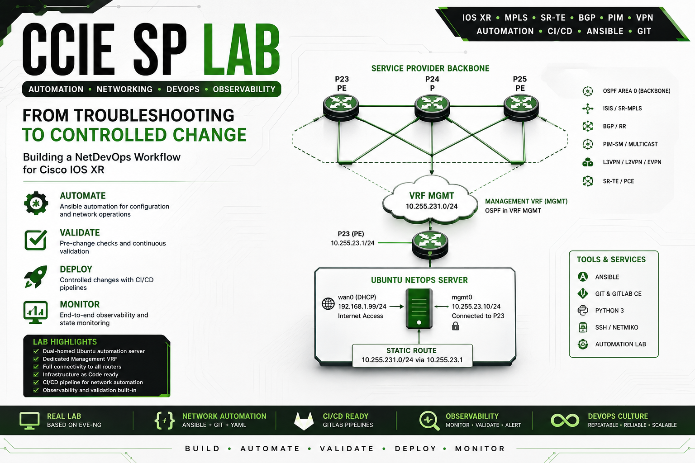
On This Note
Introduction
One of the biggest temptations when troubleshooting a network is to log directly into the affected router: SSH to the device, enter configuration mode, fix the problem, commit, and move on. It is quick, effective, and sometimes necessary.
However, that approach completely bypasses every automation workflow we spend weeks—or even months—building. While preparing my CCIE Service Provider lab, I found a simple L3VPN issue that I could have fixed manually in less than two minutes. Instead, I stopped and asked a different question.
Can my automation platform perform the same production change that I would normally execute manually?
This article documents that journey. It is not an Ansible tutorial; it is a real troubleshooting session where network engineering and NetDevOps meet.
The Lab
This was not a mocked YAML exercise. The workflow was executed against a live EVE-NG Service Provider topology running Cisco IOS XR. The troubleshooting started with an actual asymmetric L3VPN routing symptom, moved through underlay and control-plane verification, and finished with a real configuration deployment to PE4.
The backbone combined the technologies I am practicing for CCIE Service Provider:
- IS-IS Level 2 and Segment Routing MPLS.
- BGP Route Reflectors, VPNv4, and L3VPN.
- IPv4, IPv6, and PCE.
- A dedicated Ubuntu automation server.
P11 operated as the shadow Route Reflector and P12 as the primary Route Reflector.
PE1 and PE4 provided the L3VPN service edge used in the troubleshooting case. Their
service loopbacks—101.101.101.101 and 104.104.104.104—were
reachable across the IS-IS/SR-MPLS underlay before any BGP policy change was attempted.
The automation plane was intentionally separated from service forwarding through a
dedicated Management VRF. The Ubuntu server used wan0 for Internet access
and mgmt0 at 10.255.23.10/24 to reach P23 at
10.255.23.1. P23 provided access to the IOS XR management subnet
10.255.231.0/24.
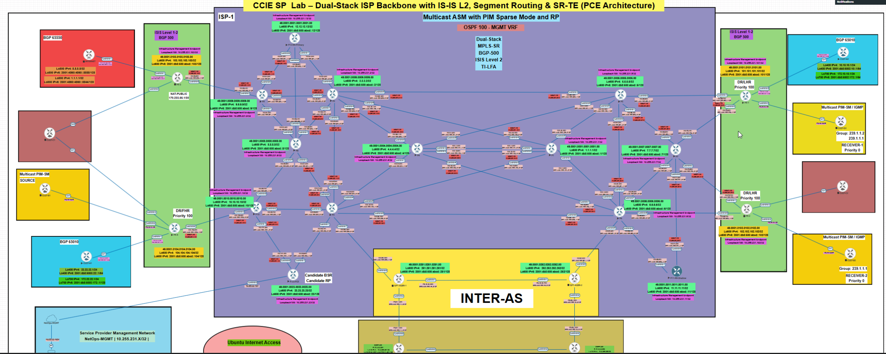
Management Network
Every managed router exposed a dedicated address reachable from the Ubuntu automation server. This isolated automation traffic from the lab services and made SSH reachability independently testable before Ansible was involved.
Management subnet 10.255.231.0/24
Automation server 10.255.23.10
PE routers 10.255.231.101 / 10.255.231.104
Route Reflectors 10.255.231.11 / 10.255.231.12The Ubuntu host required an explicit route through P23:
sudo ip route replace 10.255.231.0/24 \
via 10.255.23.1 \
dev mgmt0Making the route persistent in Netplan was part of the lab lesson: a runtime fix that disappears after reboot is not an operationally complete solution.
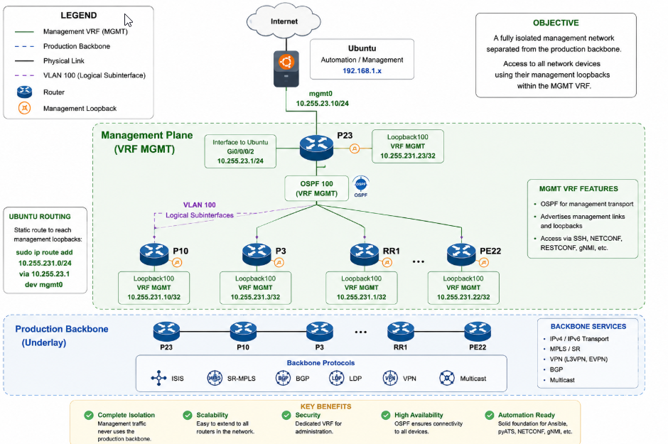
Repository Architecture: Why Each Directory Exists
The repository was organized so that intent, rendering, deployment, and evidence are separate concerns. This matters because a production change should be reviewable before a device connection is ever opened.
automation/
├── change-data/ # Structured change intent and service variables
├── inventories/ # Devices, management addresses, and logical groups
├── templates/iosxr/ # Reusable IOS XR Jinja2 configuration models
├── scripts/ # Input, rendering, and output validation
├── rendered/ # Device-specific candidate configuration by Change ID
├── playbooks/ # Validate, render, dry-run, deploy, and post-check stages
├── pyats/ # Operational service validation
└── evidence/ # Post-change outputs and audit artifacts- change-data: records what service or change is intended, without embedding device CLI in the request.
- templates: converts structured intent into vendor-specific IOS XR syntax.
- rendered: stores the exact device-specific candidate reviewed for a Change ID.
- playbooks: makes the operational sequence repeatable instead of relying on engineer memory.
- evidence and pyATS: separate deployment success from service-level validation.
The hands-on PE4 change used CRQ-CCIE-SP-0002 and a rendered file named
rendered/CRQ-CCIE-SP-0002/PE4.cfg. The repository has continued evolving
since that session, so reusable examples may carry different Change IDs; the lab evidence
in this article remains tied to CRQ-CCIE-SP-0002.
Building the Automation Inventory
The first step was expanding the Ansible inventory. Rather than managing individual
devices manually, routers were organized into logical p_routers and
pe_routers groups. Authentication came from environment variables instead
of hardcoded credentials, and SSH parameters were adapted for IOS XR 6.3.1 compatibility.
all:
children:
iosxr:
children:
p_routers:
hosts:
P11-RR-SHADOW: { ansible_host: 10.255.231.11 }
P12-RR-PRIMARY: { ansible_host: 10.255.231.12 }
pe_routers:
hosts:
PE1: { ansible_host: 10.255.231.101 }
PE4: { ansible_host: 10.255.231.104 }The connection variables described how Ansible should treat every host in the IOS XR group:
ansible_connection: ansible.netcommon.network_cli
ansible_network_os: cisco.iosxr.iosxr
ansible_network_cli_ssh_type: libssh
ansible_user: "{{ lookup('env', 'NETOPS_USER') }}"
ansible_password: "{{ lookup('env', 'NETOPS_PASSWORD') }}"
The inventory did more than map names to addresses. It established a reusable execution
boundary. An ad hoc command aimed at pe_routers could collect the same BGP
evidence from PE1 and PE4 without opening parallel interactive SSH sessions.
ansible pe_routers \
-i ../inventories/local \
-m cisco.iosxr.iosxr_command \
-a '{"commands":[
"show bgp summary",
"show bgp vpnv4 unicast summary"
]}'
iosxr_command was used for read-only operational evidence;
iosxr_config was reserved for intentional configuration deployment. Keeping
those responsibilities explicit reduced the chance of turning troubleshooting into an
accidental change.
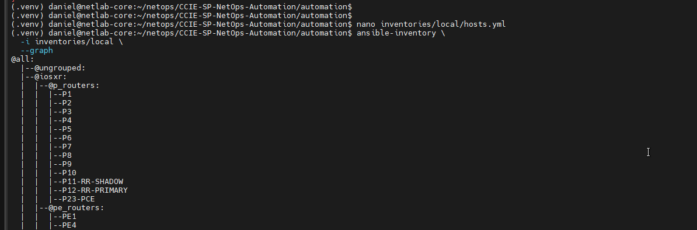
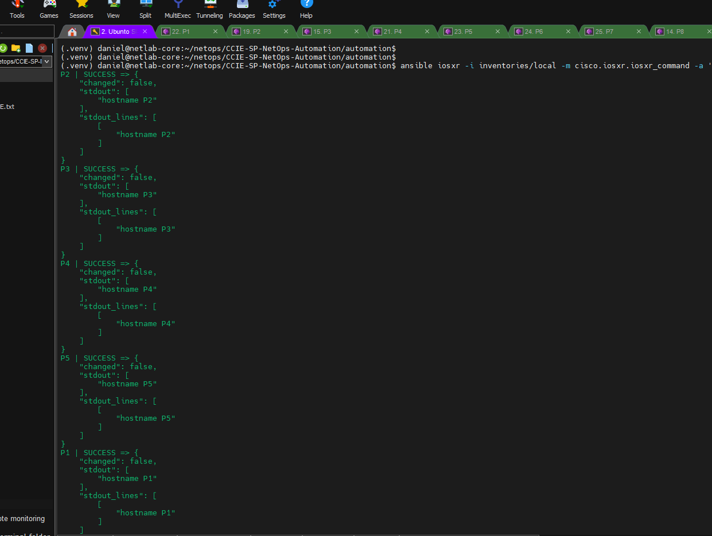
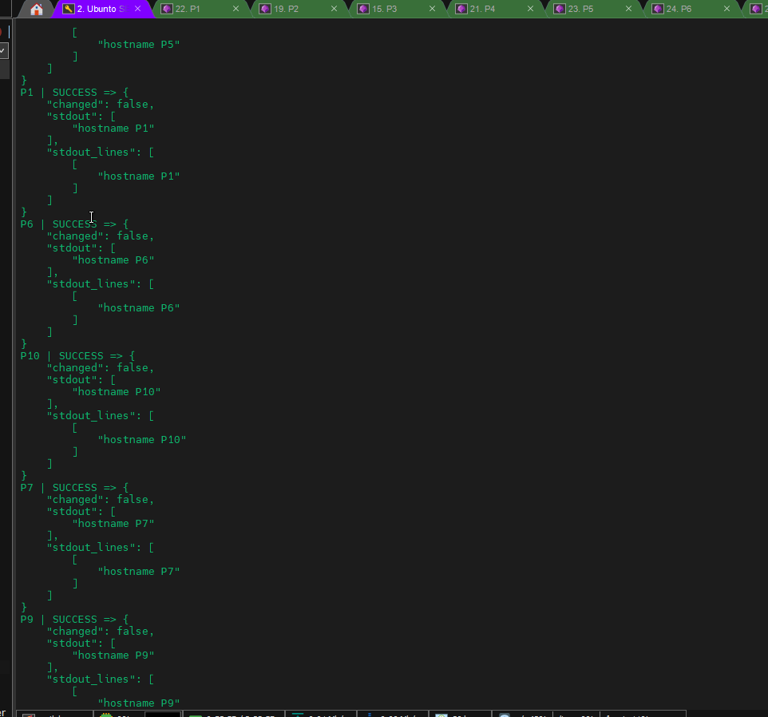
The Controlled NetDevOps Workflow
The value of the lab was the complete operational chain—not a single Ansible command. Each stage answered a different risk question before the next stage was allowed to run.
Detect symptom
↓
Collect BGP, VPNv4, IS-IS, and route evidence
↓
Identify the intended configuration change
↓
Create Change ID: CRQ-CCIE-SP-0002
↓
Build PE4.cfg as the reviewed candidate
↓
Validate the rendered file
↓
Run --check and review --diff
↓
Provide explicit production approval
↓
Deploy with --limit PE4
↓
Validate configuration, protocols, and service stateThis flow separates three outcomes that are often incorrectly treated as the same: automation execution, configuration deployment, and service restoration. A mature workflow must prove each outcome independently.
Change ID and Rendered Configuration
CRQ-CCIE-SP-0002 linked the troubleshooting decision to the candidate file
used for PE4. The rendered configuration contained the missing policy and the exact BGP
attachment points:
route-policy BGP-PASS
pass
end-policy
!
router bgp 500
vrf CUST-A
neighbor 192.0.3.6
address-family ipv4 unicast
route-policy BGP-PASS in
route-policy BGP-PASS outThe router was no longer the place where the change was authored. The candidate existed first as a version-controlled artifact that could be reviewed, validated, diffed, and associated with a Git commit before reaching IOS XR.
Production Playbook Guardrails
The deployment playbook encoded several safeguards directly into the workflow:
hosts: iosxrdefines the eligible platform scope.serial: 1changes only one device at a time.approve_production=trueis enforced with an assertion.statverifies that the rendered candidate exists.registerstores the validation result for the deployment condition.delegate_to: localhostchecks the file on the automation server, not on IOS XR.--limit PE4prevents the change from escaping the intended device scope.
- name: Require explicit production approval variable
ansible.builtin.assert:
that:
- approve_production | default(false) | bool
- name: Check rendered config exists for this device
ansible.builtin.stat:
path: "{{ rendered_config }}"
register: rendered_config_file
delegate_to: localhostThis is a lightweight lab approval gate, not a replacement for a formal ITSM process. Its purpose is practical: running the production playbook by mistake must not be enough to modify a router.
The L3VPN Problem
Customer routes were not propagating correctly between PE routers. BGP verification immediately showed asymmetric behavior: PE4 learned VPNv4 routes originated by PE1, but PE1 never learned the routes originated by PE4.
show bgp summary
show bgp vpnv4 unicast summary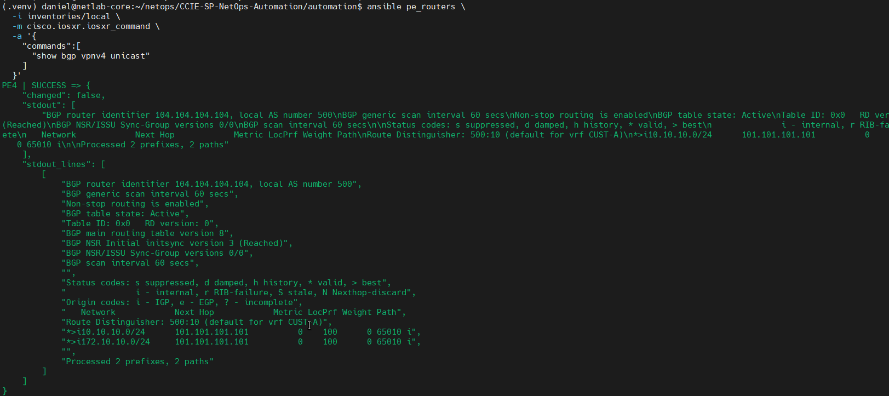
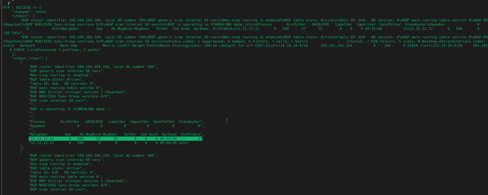
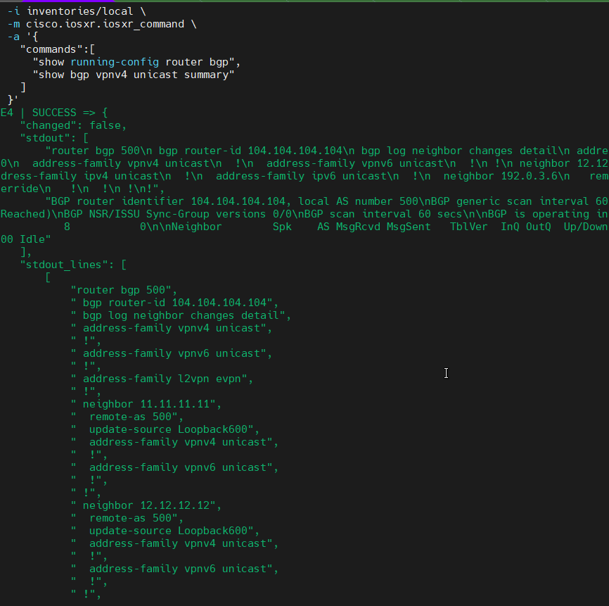
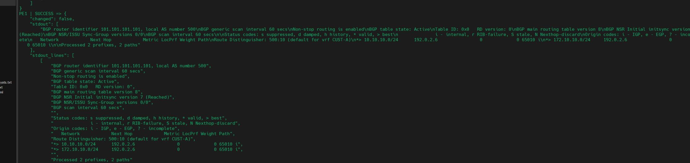
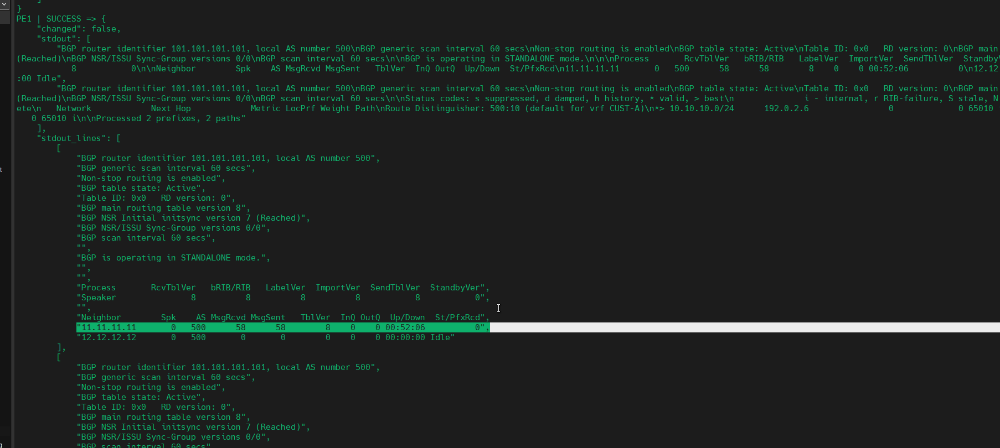
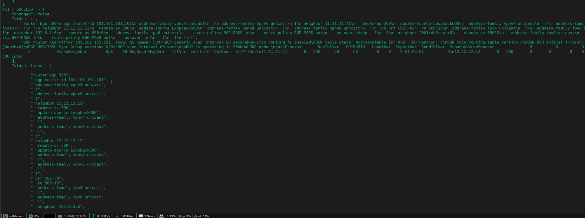
Investigating the Route Reflectors
Because VPNv4 relies on Route Reflectors, both RR nodes were checked simultaneously. RR11 was operational, while RR12 remained idle. That created the first hypothesis: perhaps RR12 was responsible for the missing routes.
ansible p_routers \
--limit P11-RR-SHADOW,P12-RR-PRIMARY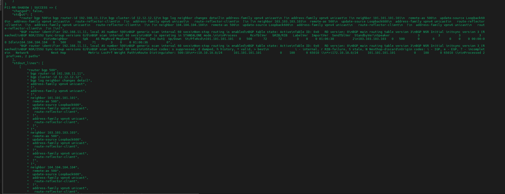
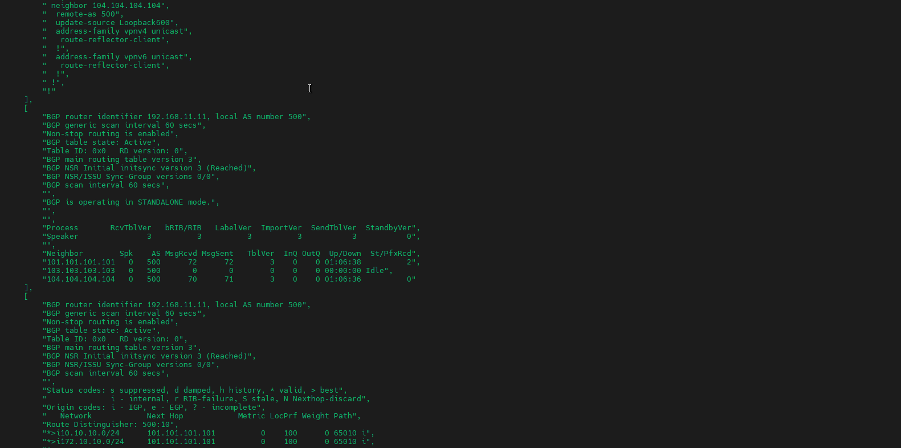
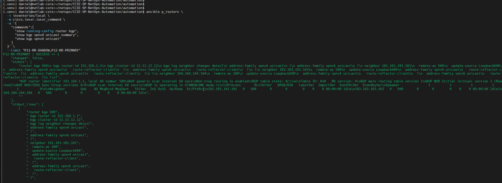
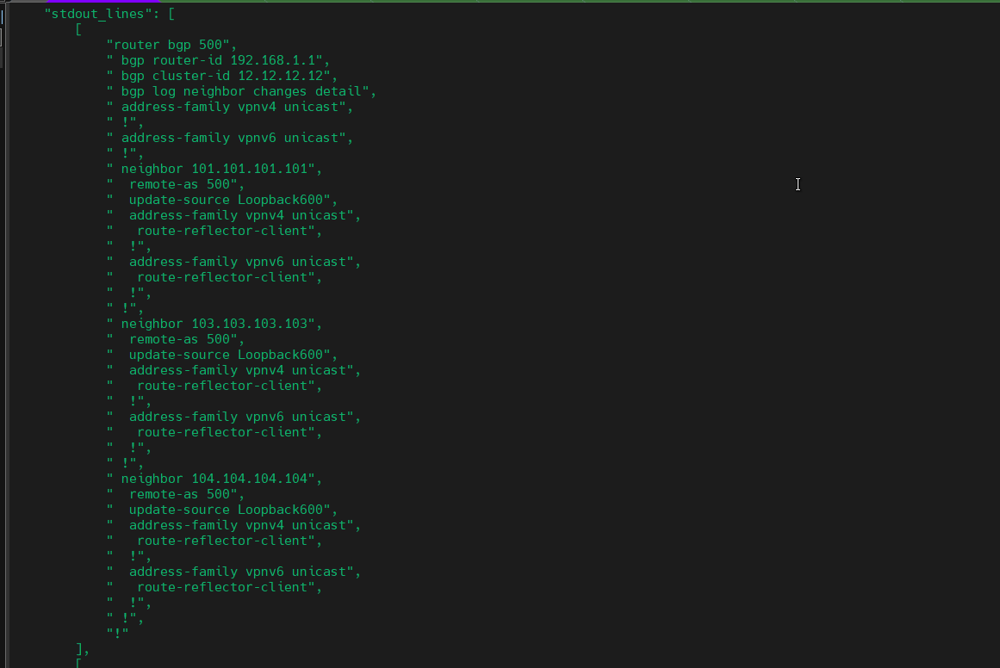
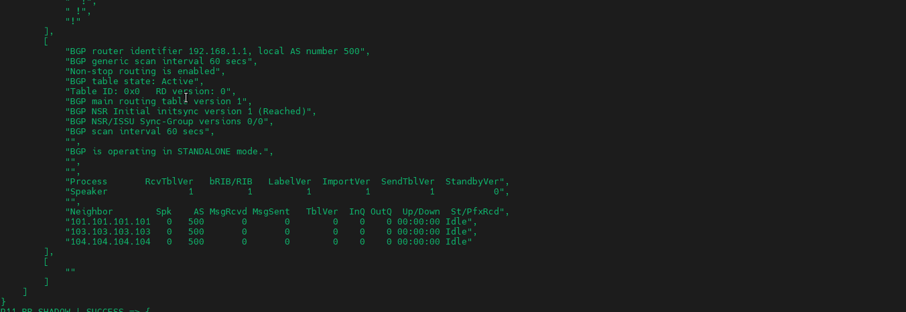
Verifying the Underlay
Before blaming BGP, the transport network had to be verified. IS-IS neighbors and PE loopback reachability were healthy, and Segment Routing was functioning correctly. The underlay was not the problem.
show isis neighbors
show route 101.101.101.101
show route 104.104.104.104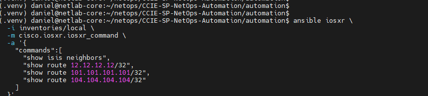
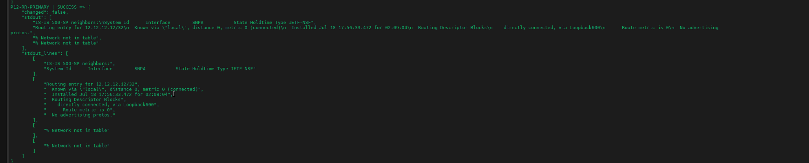
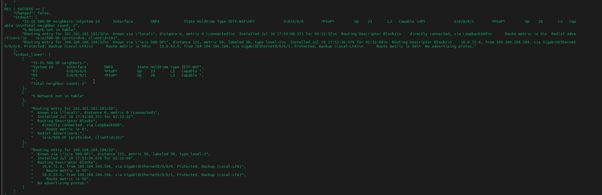
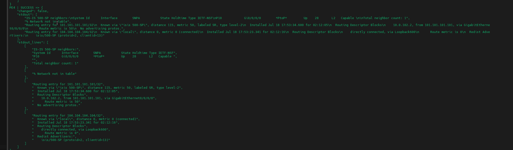
Finding the Configuration Gap
Inspection returned to PE4. The customer eBGP neighbors lacked inbound and outbound route policies. Cisco IOS XR requires explicit routing policies before accepting or advertising BGP prefixes. Without those policies, the result was zero prefixes.
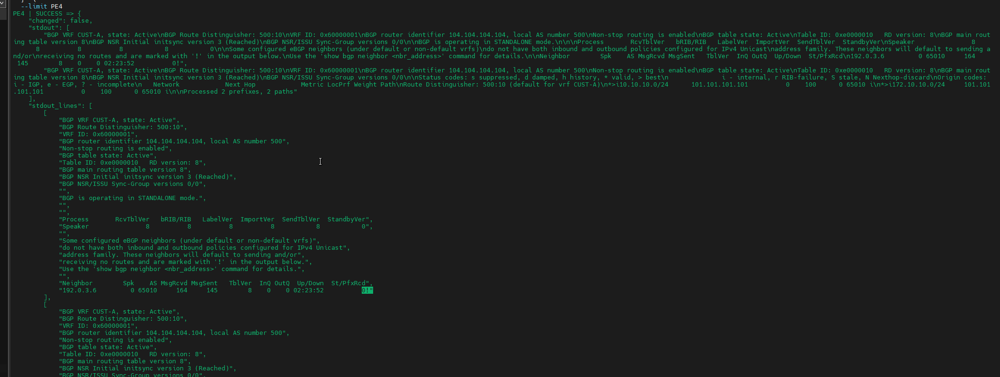
The Easy Solution
I could have logged into PE4 and completed the correction in two minutes:
configure
route-policy BGP-PASS
pass
end-policy
commitIf I fix this manually, am I validating my automation platform—or merely proving that SSH still works?
No direct SSH and no manual configuration. Everything would be executed through the NetDevOps workflow.
Building the Change Request
A controlled Change Request—CRQ-CCIE-SP-0002—was created instead of
editing the router. A rendered configuration containing the missing route policy and
BGP neighbor updates was generated specifically for PE4. At this point, no production
device had been modified; only the desired state existed.
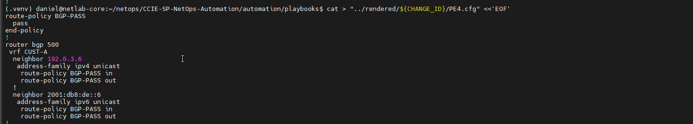
Dry Run Before Production
The deployment was first executed in Check Mode. Ansible calculated exactly what would change without touching the router. The diff showed the expected modification with no hidden commands or surprises.
ansible-playbook deploy-production.yml --check --diff
During Check Mode, changed=1 does not mean the router was modified. It means
Ansible detected a difference that would require a change. The useful review came from
combining both options:
--check: would this request require a configuration change?--diff: exactly which commands or hierarchy would differ?
Check Mode reduces risk but is not a perfect emulation of every device-side result. Module behavior and IOS XR semantic validation still matter. That limitation became visible later when the router evaluated the dependency between the route-policy definition and its BGP attachment.
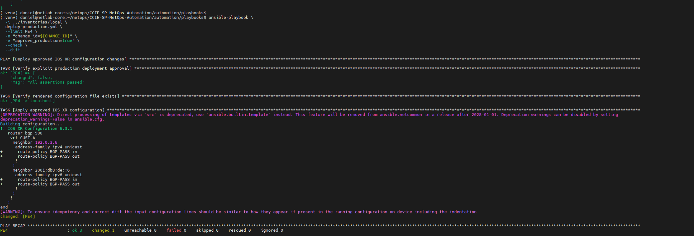
What iosxr_config Actually Added to the Lab
cisco.iosxr.iosxr_config is different from blindly replaying CLI text. It
evaluates the requested candidate against the existing device configuration, calculates
a delta, sends configuration through the IOS XR candidate model, and commits when the
candidate passes platform validation.
That comparison is also where engineers must be careful. The rendered file and the
commands actually selected by a module are not always identical. In this lab, the initial
delta attempted to attach BGP-PASS without sending the policy definition in
the same candidate. IOS XR correctly rejected the dependency.
The workflow was adjusted so the complete required block was delivered together. This was a hands-on demonstration of why module matching behavior, hierarchical configuration, and platform semantics must be understood—not hidden behind the word “automation.”
The desired end state was also idempotent: the first valid execution should report
changed=1; a later execution against an already compliant device should
ideally report changed=0 instead of replaying unnecessary commands.
Automation Troubleshooting: Where the Hands-On Work Happened
The first deployment did not succeed on the first attempt. That was one of the most valuable parts of the exercise: every failure exposed a different dependency in the automation stack.
| Failure | Technical cause | Operational lesson |
|---|---|---|
| SSH host authenticity / unknown host | The Ubuntu server had not yet trusted the IOS XR host key. | Automation depends on the SSH trust layer before Ansible logic can begin. |
| Legacy SSH algorithm compatibility | IOS XR 6.3.1 required compatible host-key parameters. | Transport compatibility is part of the platform design, not a routing issue. |
| Commit comment error | Commit-comment behavior varied with IOS XR and collection versions. | Module documentation and platform release behavior must be validated together. |
Policy [BGP-PASS] must be defined | The calculated delta attached the policy before including its definition. | Rendered intent and transmitted candidate can differ; inspect the diff. |
YAML typo: roouter | A misspelled hierarchy changed the intended IOS XR syntax. | Text validation is operational risk control, not cosmetic linting. |
| Inventory host-pattern mismatch | Names such as P12-RR-Primary and P12-RR-PRIMARY are not interchangeable. | Naming consistency is part of automation correctness. |
The path to the router was a dependency chain: Linux routing → SSH → authentication → inventory → Ansible module → IOS XR candidate configuration → commit. A failure at any layer stopped the entire workflow.
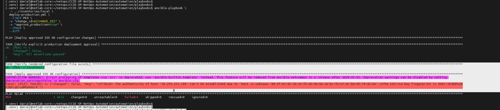
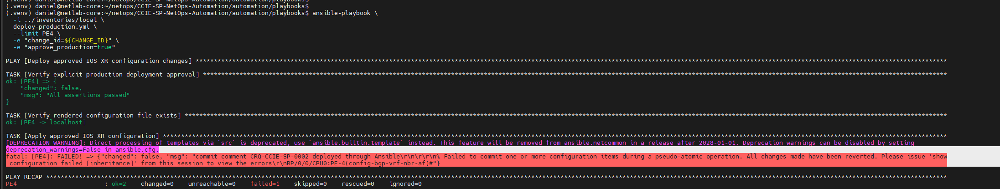
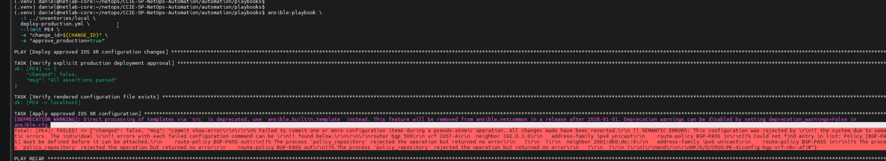
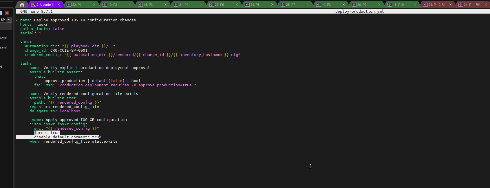
Production Deployment
After correcting the issues, the production-style deployment completed successfully.
changed=1 failed=0The rendered configuration became the running configuration. This was the first controlled change executed entirely from the automation platform, without manual CLI configuration.
export CHANGE_ID=CRQ-CCIE-SP-0002
ansible-playbook \
-i ../inventories/local \
deploy-production.yml \
--limit PE4 \
-e "change_id=${CHANGE_ID}" \
-e "approve_production=true"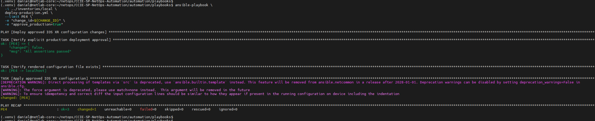
Validation
The final step verified that the running PE4 configuration matched the rendered template: the route policy was deployed, BGP neighbors were updated, and no unintended changes were introduced. Configuration as code had become configuration as state.
Pre-change and post-change checks were deliberately broader than the modified lines. Each command answered a protocol-specific question:
| Command | What it validated |
|---|---|
show isis neighbors | Underlay adjacencies remained established. |
show route 101.101.101.101/32 | PE1 loopback was reachable through the transport network. |
show route 104.104.104.104/32 | PE4 loopback was reachable through the transport network. |
show bgp vpnv4 unicast summary | VPNv4 control-plane sessions and prefix exchange. |
show bgp vrf CUST-A ipv4 unicast | Customer prefixes present in the service VRF. |
show running-config router bgp | The route-policy and neighbor hierarchy matched intent. |
show mpls forwarding | Label forwarding state remained available. |
show segment-routing | Segment Routing control-plane state remained intact. |
A soft BGP clear was used to request route re-evaluation without unnecessarily tearing down the complete neighbor relationship. The expected prefixes still did not return, proving that the missing policy was not the only unresolved service condition.
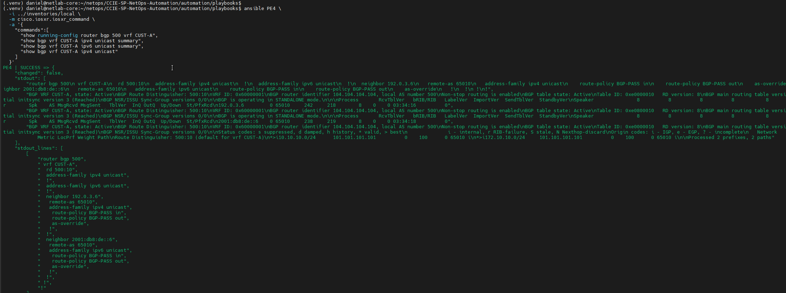
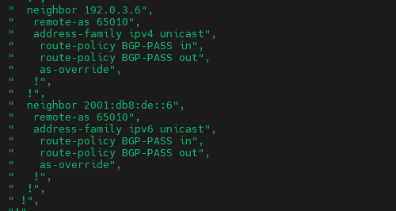
An Interesting Result
Although the configuration deployed successfully, the original routing issue still existed. At first glance, this looked like failure. It was not.
Automation does not replace troubleshooting; it standardizes how changes are executed. Finding the root cause remains the responsibility of the network engineer. A successful deployment proves that the intended change was applied correctly—not that every network symptom has necessarily disappeared.
| Outcome | Result in this lab | Meaning |
|---|---|---|
| Automation execution | Successful | The playbook, guardrails, transport, and module completed. |
| Configuration deployment | Successful | The approved route-policy change reached PE4 and was committed. |
| L3VPN service restoration | Additional troubleshooting required | The original symptom had more than one contributing condition. |
That distinction is what made the exercise credible. Reporting only
changed=1 failed=0 would describe Ansible, not the health of the network.
Lessons Learned
- The router should never be the source of truth.
- Every production-style change deserves a Change Request.
- Validation is as important as deployment.
- Dry runs prevent unnecessary production mistakes.
- Troubleshooting and automation complement each other.
- Git becomes part of the network operating model.
- YAML mistakes can break production as easily as routing mistakes.
- A successful deployment does not automatically mean the original problem is solved.
- IOS XR semantic validation is a safety mechanism that automation must respect.
- Runtime reachability and persistent management-plane configuration are separate concerns.
- A reversible, auditable change process is more valuable than a fast one-off fix.
Where the Lab Evolves Next
The natural next step is to move the manual approval and execution sequence into a complete CI/CD control plane while preserving the same engineering gates.
- Run schema and rendered-configuration validation automatically before merge.
- Publish rendered candidates and diffs as pipeline artifacts.
- Use Merge Requests as the peer-review and approval boundary.
- Add post-change pyATS checks for BGP, IS-IS, VPNv4, and Segment Routing.
- Prepare IOS XR rollback artifacts for every approved Change ID.
- Evaluate Batfish for offline intent and reachability validation.
- Send deployment and validation results to collaboration platforms.
- Reuse the workflow for RR clients, IS-IS, prefix-SIDs, SR-TE, multicast, EVPN, and QoS.
These are roadmap items, not claims that every component is already production-ready. The proven foundation is the controlled PE4 workflow documented in this hands-on lab.
Final Thoughts
When I started building this CCIE Service Provider lab, the objective was learning routing protocols. Today, the goal has evolved. Designing the network is only part of the job; operating it efficiently is just as important.
This L3VPN issue became the first real validation that my automation platform can execute controlled, repeatable, and auditable configuration changes across the Service Provider lab. The routing issue will eventually be solved, but the automation workflow built during this process will remain for every future deployment.
From a CCIE SP perspective, the central lesson is that protocol knowledge remains the decision engine. Ansible can distribute commands consistently, Git can preserve intent, and a pipeline can enforce gates—but none of them can decide whether the actual failure belongs to the underlay, the VPNv4 control plane, VRF policy, or customer-edge exchange without sound Service Provider troubleshooting.
Automation does not replace network engineering. It turns engineering intent into a controlled, repeatable, and auditable operational process.
Comments & Discussion
How do you validate configuration intent before deploying changes to your network?